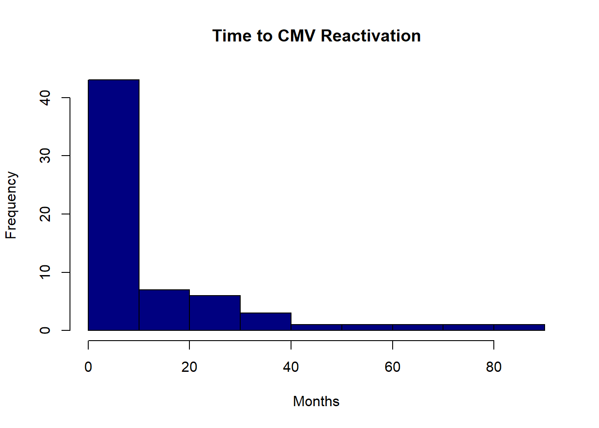

| Characteristic | Total N = 641 | 0 N = 301 |
1 N = 341 |
p-value2 |
|---|---|---|---|---|
| Type of Diagnosis (0 = lymphoid, 1 = myeloid) | >0.9 | |||
| 0 | 28 (48%) | 13 (46%) | 15 (50%) | |
| 1 | 30 (52%) | 15 (54%) | 15 (50%) | |
| Missing | 6 | 2 | 4 | |
| Prior radiation (0 = no, 1 = yes) | >0.9 | |||
| 0 | 53 (83%) | 25 (83%) | 28 (82%) | |
| 1 | 11 (17%) | 5 (17%) | 6 (18%) | |
| Number of prior chemotherapy regimens | 0.7 | |||
| 0 | 10 (16%) | 3 (10%) | 7 (21%) | |
| 1 | 15 (23%) | 7 (23%) | 8 (24%) | |
| 2 | 17 (27%) | 8 (27%) | 9 (26%) | |
| 3 | 9 (14%) | 5 (17%) | 4 (12%) | |
| 4 | 6 (9.4%) | 4 (13%) | 2 (5.9%) | |
| 5 | 5 (7.8%) | 3 (10%) | 2 (5.9%) | |
| 7 | 1 (1.6%) | 0 (0%) | 1 (2.9%) | |
| 8 | 1 (1.6%) | 0 (0%) | 1 (2.9%) | |
| Cytomegalovirus reactivation posttransplant (0 = no, 1 = yes) | 0.091 | |||
| 0 | 38 (59%) | 14 (47%) | 24 (71%) | |
| 1 | 26 (41%) | 16 (53%) | 10 (29%) | |
| Time to CMV reactivation (in months) | 5 (3, 16) | 4 (2, 16) | 7 (3, 16) | 0.8 |
| 1 n (%); Median (Q1, Q3) | ||||
| 2 Pearson’s Chi-squared test; Welch Two Sample t-test | ||||
Final Project
This data comes from higgi13425’s medical data on GitHub. It is a package of a collection of 19 medical datasets which come from historical sources including James Lind’s scurvy dataset from 1757, the original streptomycin for TB trial 1948, and cohort data on SARS-CoV2 testing results in 2020. The data I am using comes from a Cytomegalovirus Retrospective Cohort Study of 64 patients including information on allogeneic hematopoietic stem cell transplant, where the primary outcome is time to cytomegalovirus reactivation. (online source: github.com/higgi13425/medicaldata/)
#|label: tbl-two
#|tbl-cap: "Regression Table"
#|echo: false
regress<- tbl_uvregression(
cytomeg,
y = prior.chemo,
include = c(time.to.cmv, cmv, diagnosis.type),
method = lm
)
regress| Characteristic | N | Beta | 95% CI | p-value |
|---|---|---|---|---|
| time.to.cmv | 64 | 0.00 | -0.03, 0.02 | >0.9 |
| cmv | 64 | |||
| 0 | — | — | ||
| 1 | -0.32 | -1.2, 0.58 | 0.5 | |
| diagnosis.type | 58 | |||
| 0 | — | — | ||
| 1 | -2.2 | -2.9, -1.4 | <0.001 | |
| Abbreviation: CI = Confidence Interval | ||||

fem_timeto <- inline_text(desc_stats, variable = "time.to.cmv", column = "stat_1")
timeto_med<-inline_text(desc_stats, variable = "time.to.cmv",
pattern = "{median} months")
timeto_regress<-inline_text(regress, variable = "time.to.cmv")
fem_timeto[1] "4 (2, 16)"